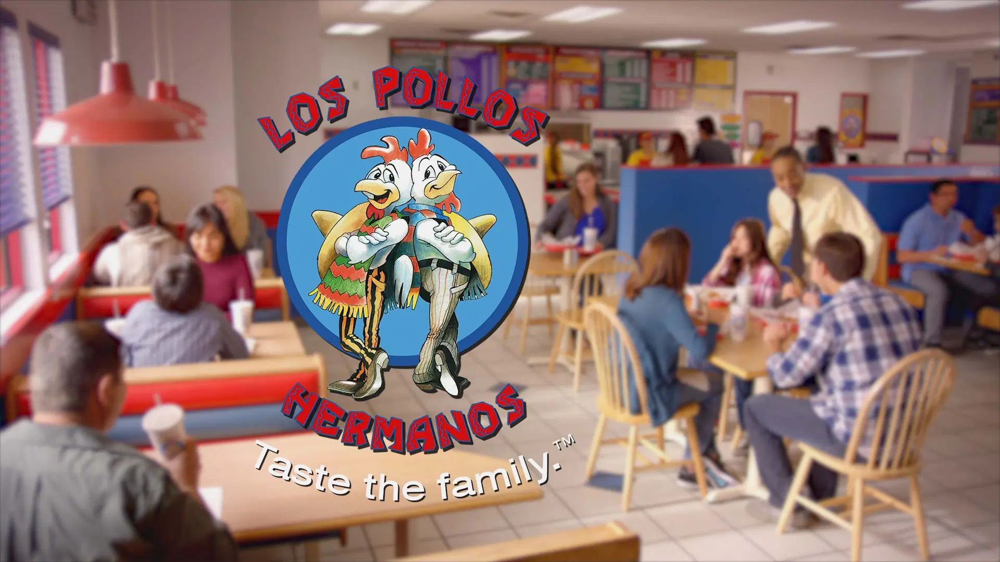
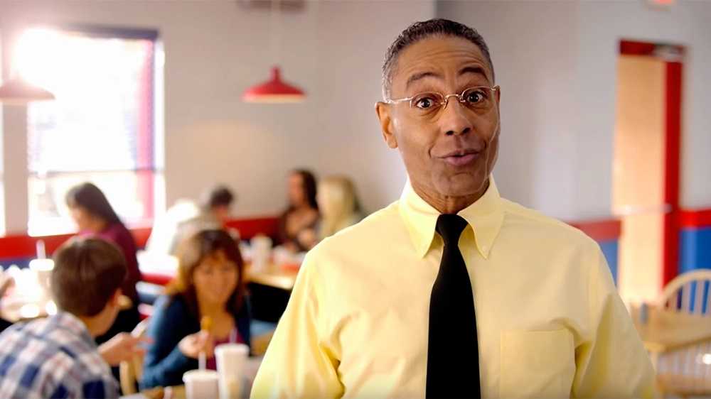
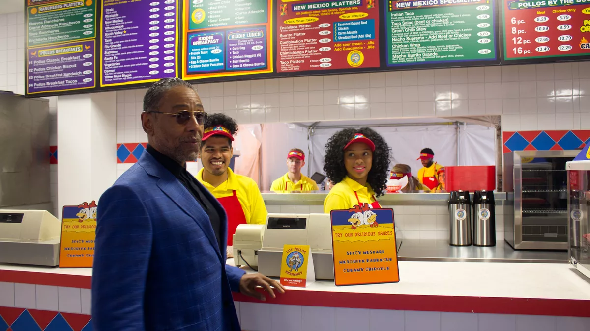

Los Pollos Hermanos
Los Pollos Hermanos (Spanish for The Chicken Brothers) is a fried chicken fast food restaurant that originated in the television series Breaking Bad and Better Call Saul. In the fictional universe of Breaking Bad, Los Pollos Hermanos is a front organization for Gus Fring's meth manufacturing and distribution operation. The set used for the restaurant in the show was at a Twisters branch in South Valley, New Mexico, and Twisters has seen an increase in business attributed to being associated with Breaking Bad. Due to the show's popularity, Los Pollos Hermanos has appeared on numerous occasions and locations as a real-life pop-up restaurant.
